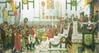
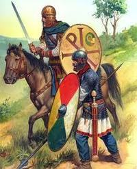

El prisionero que fue canjeado por 600.000 cigarrillos.
Fri, 25 Nov 2011 01:30:31 PST
Estamos acostumbrados a que los protagonistas de las historias de guerra sean héroes que sacrificaron su vida, brillantes estrategas, miserables sin escrúpulos… pero en esta historia los protagonistas lo fueron por su caballerosidad. Un de ellos, el coronel Hans von Luck, llegó a decir “hacíamos una guerra despiadada pero decente“. Hans von Luck era coronel [...]
El prisionero que fue canjeado por 600.000 cigarrillos. escrito por Javier Sanz en: Historias de la Historia
Estamos acostumbrados a que los protagonistas de las historias de guerra sean héroes que sacrificaron su vida, brillantes estrategas, miserables sin escrúpulos… pero en esta historia los protagonistas lo fueron por su caballerosidad. Un de ellos, el coronel Hans von Luck, llegó a decir “hacíamos una guerra despiadada pero decente“.
Hans von Luck era coronel de un regimiento de panzer (Panzerwaffe) durante la II Guerra Mundial. Después de luchar en el frente europeo fue enviado Afrika Korps donde Rommel, con el que trabó una estrecha amistad, le puso al mando del 3 Batallón Panzer de Reconocimiento. Tras recibir el alta después de ser herido en la batalla de Galaza (Libia) se le encargó proteger el flanco sur del Afrika Korps, enfrentándose al Long Range Desert Group (LRDG), unidad del ejército de tierra británico especializado en reconocimiento motorizado.
El comandante al mando del LRDG debía ser también un caballero y partidario de una guerra civilizada. Llegaron a un acuerdo por el que a partir de las 17:00 horas cesarían las hostilidades e intercambiarían impresiones, cartas de los prisioneros… Hubo algún que otro problemilla con el horario, como aquella ocasión en la que los alemanes capturaron un camión de provisiones británicos pasada la hora convenida y Hans von Luck preparó un plan para que los británicos capturasen su propio camión.
Pero el caso que nos ocupa se llevó la palma. Los alemanes se enteraron de que sus enemigos había recibido suministros de cigarrillos como para cubrir las necesidades de todo el regimiento durante más de un mes. Siendo el tabaco un artículo de lujo en estos lares, los alemanes ofrecieron intercambiar un oficial británico capturado a cambio de un millón de cigarrillos. Los británicos sopesaron la oferta y decidieron que un millón era mucho y que su contraoferta eran 600.000 cigarrillos.
Cuando el oficial británico se enteró casi echó por tierra el negocio por considerar que la oferta de sus paisanos era insuficiente, igual que Julio César cuando fue capturado por los piratas y se ofendió porque sólo había pedido como rescate 20 talentos. El caso es que, al final, se hizo el intercambio.
Y lo más curioso de todo, el oficial británico era el heredero de John Player & Sons, fabricante de cigarrillos de Nottingham (Reino Unido)
Fuentes: WWIIinColor, elpais, The Victors – Stephen E. AmbroseSimilar Posts:
- ¿Qué planta pasó de los uniformes alemanes a los británicos en las Guerras Mundiales?
- El día que unos japoneses en bicicleta humillaron al ejército británico
- El cadáver encontrado en Huelva que engañó a Hitler
- El cráneo que se disputaron alemanes y británicos
- Muertos por un plato de sopa y en el último minuto.
El prisionero que fue canjeado por 600.000 cigarrillos. escrito por Javier Sanz en: Historias de la Historia
La Pepa, una Constitución un tanto ingenua
Tue, 22 Nov 2011 01:35:23 PST
Aunque si hablamos de ingenuidad en una Constitución tampoco haría falta remontarse a la Pepa (1812), bastaría con leer el artículo 47 de la actual de 1978: Todos los españoles tienen derecho a disfrutar de una vivienda digna y adecuada. Los poderes públicos promoverán las condiciones necesarias y establecerán las normas pertinentes para hacer efectivo [...]
La Pepa, una Constitución un tanto ingenua escrito por Javier Sanz en: Historias de la Historia
Aunque si hablamos de ingenuidad en una Constitución tampoco haría falta remontarse a la Pepa (1812), bastaría con leer el artículo 47 de la actual de 1978:
Todos los españoles tienen derecho a disfrutar de una vivienda digna y adecuada. Los poderes públicos promoverán las condiciones necesarias y establecerán las normas pertinentes para hacer efectivo este derecho, regulando la utilización del suelo de acuerdo con el interés general para impedir la especulación.
La Constitución española de 1812, La Pepa, fue promulgada por las Cortes Generales el 19 de marzo de 1812. Fue nuestra primera Constitución y, aunque plantea un modelo liberal, consiguió poner de acuerdo a liberales y absolutistas. Pero debieron pensar, como en la película de Manuel Summers “To er mundo e güeno”, porque la redacción del artículo 6 quedó así:
El amor de la Patria es una de las principales obligaciones de todos los españoles, y asimismo el ser justos y benéficos.

Promulgación de la Pepa
Similar Posts:
- La silla eléctrica en España funcionaba con sexo
- El Corte Inglés y el pelotazo en la posguerra.
- La fonética inglesa jugó una mala pasada.
- Aviso a chorizos de hace 27 siglos
- Una Isabel lleva la fama y otra carda la lana
La Pepa, una Constitución un tanto ingenua escrito por Javier Sanz en: Historias de la Historia
Archienemigos de Roma: Frigiterno, el verdugo de Adrianópolis.
Fri, 18 Nov 2011 01:40:38 PST
Vigésima entrega de “Archienemigos de Roma“. Colaboración de Gabriel Castelló. Nuestro archienemigo de hoy es un ilustre ninguneado cuyo gran mérito fue infringirle la mayor derrota militar al Imperio Romano de Oriente. La batalla de Adrianópolis supuso un antes y un después en la actitud de Roma frente a los bárbaros. No sabemos con exactitud qué [...]
Archienemigos de Roma: Frigiterno, el verdugo de Adrianópolis. escrito por Javier Sanz en: Historias de la Historia
Vigésima entrega de “Archienemigos de Roma“. Colaboración de Gabriel Castelló.
Nuestro archienemigo de hoy es un ilustre ninguneado cuyo gran mérito fue infringirle la mayor derrota militar al Imperio Romano de Oriente. La batalla de Adrianópolis supuso un antes y un después en la actitud de Roma frente a los bárbaros.
No sabemos con exactitud qué año nació Frigiterno, cuyo nombre original en godo, Frithugarnis, significa “Deseando la Paz”. Caudillo de los tervingios, su nombre aparece en la Historia cuando le solicitó al emperador Valente que su pueblo pudiese instalarse en el lado romano del Danubio. La pregunta es obvia, ¿Por qué Frigiterno no se contentó con mantenerse en la Dacia, en manos de los godos desde que se la cediese el emperador Aureliano muchos años antes? La respuesta tenía los ojos rasgados, era de pequeña estatura y manejaba muy bien el arco a caballo. Los hunos masacraron en el 376 a los ostrogodos (Ost Goths, godos del Oeste), continuando su camino de pillaje y destrucción hacia el Imperio Romano de Oriente. Los pocos supervivientes alertaron a los visigodos (Wiss Goths, godos del Este) del peligro que arrostraban y Frigiterno, su caudillo por entonces, vio clara la conveniencia de cruzar el Danubio en calidad de foederati del Imperio. En aquel momento el César de Oriente era Flavio Julio Valente, quien ya se había enfrentado a los godos con éxito entre el 367 y el 369, conminándolos en la Escitia occidental (hoy Moravia y Valaquia). Valente accedió a la propuesta de Frigiterno, que era arriano como él; para el emperador, una alianza estratégica con los visigodos supondría un buen muro de contención ante el peligro común que podían representar los hunos. Los visigodos fueron asentados en Moesia, en aquellos momentos una provincia pobre y despoblada, concediéndoles la ciudadanía romana a cambio de su servicio militar y el consecuente pago de los impuestos imperiales. No todos los bárbaros cruzaron el río. Atanarico, adversario tribal de Frigiterno, se quedó en la Dacia a su suerte, quizá porque aún era pagano y se oponía a la política “filorromana” del caudillo visigodo.

Equite y legionario de Valente
Los problemas de Frigiterno no vinieron por sus desavenencias internas. La Iglesia y la aristocracia más conservadora pronto se mostraron opuestas a la decisión imperial. A su vez, la codicia desmedida de la administración local acabó por soliviantar a los nuevos aliados. Según los últimos estudios – quizá menos propagandísticos y apocalípticos que los relatos de Marcelino u Orosio, ambos historiadores romanos contemporáneos de estos hechos – la cifra de bárbaros que se establecieron en Moesia estaría cercana a los 75.000, siendo sólo unos 15.000 los hombres en edad de guerrear. A éstos habría que sumar los cerca de 4.000 jinetes ostrogodos y alanos que escaparon de los hunos y que se enrolaron en el contingente visigodo.
La situación en el 377 se hizo insostenible. A las malas cosechas se sumó la avaricia desmedida del comes (conde) de Moesia, Lucipino, quien se hizo rico inflando los precios de los suministros que la administración imperial destinaba a sus foederati. También se sabe que aquel año el pagano Atanarico cruzó el río para unirse a sus paisanos, soliviantando a la Iglesia que veía en el la piel del demonio. Frigiterno, alertado del complot que había urdido Lucipino para asesinarle, le mató durante un banquete en el que éste tenía planeado eliminarle.
Habiendo roto relaciones con el Imperio, y con su pueblo exigiéndole sustento, Frigiterno se dirigió a Tracia, saqueando ciudades y campiña para obtener los suministros que su pueblo necesitaba para subsistir. Dos pequeños ejércitos romanos fueron liquidados sin excesivos problemas, alarmando con ello a la corte de Constantinopla. Valente reaccionó rápido. Salió de Antioquía (Siria) donde estaba enzarzado con los persas, para llegar a los Balcanes al frente de un ejército considerable, siete legiones, cerca de 21.000 hombres, además de un número aún mayor de auxiliares. Levantó su campamento junto a una ciudad que pasaría a la Historia por lo que tenía que ocurrir frente a ella: Adrianópolis (hoy Edirne, en la Turquía europea)

Adrianópolis
Valente, apoyado por sus legados Víctor y Ricimero (un vándalo encumbrado a magister militum tiempo después), formó ante el campamento visigodo una fuerza imponente. Sus siete legiones contaban con las tropas de élite, la legión palatinae, así como una pequeña fuerza de caballería también destacable. Sólo había una diferencia con otros enfrentamientos anteriores en la zona de gran magnitud, como los acaecidos durante la guerra dacia de Trajano. Las legiones del siglo IV tenían como tal el nombre. El legionario del año 378 en nada tenía que ver con el de Marco Aurelio o Trajano. Con una larga spatha en vez de gladio, un scutum redondo en vez del cuadrado clásico y una cota de malla en vez de la lorica segmentata, era un cuerpo de ejército peor dispuesto, disciplinado y pertrechado.
En cambio, los godos habían recibido instrucción romana como foederati que eran, además de usar todo tipo de armas de contacto o arrojadizas, ganando contundencia sin padecer la rigidez estructural de las líneas romanas. Pero su ventaja principal no fue esa movilidad, sino el peso de la caballería en la estrategia.
El 9 de Agosto del 378, Valente sacó a sus tropas del campamento de Adrianápolis, dejando allí su impedimenta y el tesoro de guerra, y formó en una llanura próxima ante Frigiterno. El corregente de Occidente, su sobrino Graciano, se había mostrado diligente y venía en ayuda de su tío, pero éste pensó que no podía esperar, quizá espoleado por su legado Sebastián o por otros motivos que se desconocen. No me extenderé con el relato pormenorizado de esta impresionante batalla, me centraré en las consecuencias de la misma. Alateo, el comandante de la caballería goda, destrozó a la débil caballería romana, atosigando después a las legiones por los flancos mientras que Frigiterno empujaba a las tropas de Valente por el centro hasta que la batalla se tornó en matanza. Dos terceras partes del ejército romano no salieron nunca de la llanura de Adrianópolis, incluido el emperador Valente. Según los testimonios coetáneos, era difícil avanzar entre tanta sangre, heces, orines y cuerpos mutilados. Dado lo cruento de la batalla, donde secciones enteras de la línea romana murieron matando ante la evidencia de no tener posible fuga, es lógico pensar que las bajas godas serían también considerables.
El fin de Valente es controvertido, según nos dejó Amiano Marcelino en sus Historias, pudieron pasar dos cosas:
“fue herido mortalmente por una flecha, y expiró”, (XXXI.12)
Valente fue herido y llevado a una pequeña choza de madera. La choza fue rodeada por los godos que le prendieron fuego, sin saber quién estaba dentro (XXXI.13.14-6)
Lo cierto es que no se recuperó el cadáver del emperador, por lo que fue tratado como cualquier otro legionario. Víctor y Ricimero condujeron a los supervivientes a Adrianópolis, quizá en busca de unos muros que sirviesen de freno a la marea goda. Toda la parte europea del Imperio de Oriente quedó a merced de Frigiterno, conmocionado y sin su César, quien saqueó a conciencia campos y ciudades con la excepción de Atenas, la cercada Adrianápolis y la capital, Constantinopla, a causa de la ausencia de máquinas de asedio con las que derruir los muros de estas grandes ciudades fortificadas.
Frigiterno murió como rey absoluto de los visigodos en el 380. Le sucedió su antiguo adversario, Atanarico. Éste sólo pudo reinar un año, pero antes de su muerte en el 381 consiguió que el nuevo regente de Oriente, un legado de origen hispano llamado Teodosio, les concediese la condición irrevocable de foederati del Imperio. Adrianápolis fue la tumba de las legiones. Desde aquel desastre inmortal, Teodosio favoreció la figura del dux (duque) al mando de un ejército fronterizo, limitanei, que sería apoyado por un ejército libre de frontera, comitatense, que se desplazase allá donde surgiesen los problemas. Acababa de nacer el feudalismo.Similar Posts:
- Archienemigos de Roma. Alarico
- Archienemigos de Roma: Sapor I, el resurgimiento de Persia
- Archienemigos de Roma. Zenobia de Palmira
- Archienemigos de Roma. Tigranes el Grande
- Archienemigos de Roma. Atila
Archienemigos de Roma: Frigiterno, el verdugo de Adrianópolis. escrito por Javier Sanz en: Historias de la Historia
Una solución faraónica para las molestas moscas
Mon, 14 Nov 2011 11:00:29 PST
Supongo que muchos habréis visto bolsas de agua, o incluso CDs, colgadas en muchas terrazas y que tiene la misión de ahuyentar las moscas. La explicación más coherente, que he encontrado, es que al ver su reflejo con un tamaño enorme se asustan y se van (¿?). Y como nadie estaba libre de ser objetivo [...]
Una solución faraónica para las molestas moscas escrito por Javier Sanz en: Historias de la Historia
Supongo que muchos habréis visto bolsas de agua, o incluso CDs, colgadas en muchas terrazas y que tiene la misión de ahuyentar las moscas. La explicación más coherente, que he encontrado, es que al ver su reflejo con un tamaño enorme se asustan y se van (¿?). Y como nadie estaba libre de ser objetivo de las molestas moscas, el faraón Pepi II optó por una solución… curiosa.
Pepi II fue un faraón de la VI dinastía en Egipto del Imperio Antiguo. Tras la temprana muerte de su padre Merenre I, subió al trono a la edad de seis años y se le atribuye haber reinado durante más de 90 años (¿?).
Se cuenta que Pepi II encontró la solución perfecta para ahuyentar las moscas: siempre iba acompañado de varios esclavos cubiertos de miel. Teniendo junto a él objetivos tan golosos, las moscas se centraban en ellos y dejaban tranquilo al faraón. Aquí tenéis una parodia de la BBC:
Similar Posts:
- El origen de la expresión “tócame los…”
Una solución faraónica para las molestas moscas escrito por Javier Sanz en: Historias de la Historia